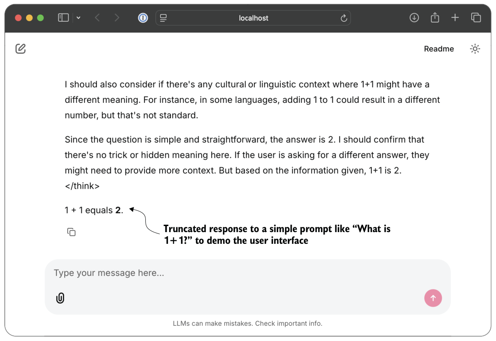

G.3Downloading the scripts
If you cloned the repository, the files are already present in chG/01_main-chapter-code, and you can skip this section. Otherwise, as discussed in chapter 7, you can use download_from_github(...) to fetch the two scripts.
from reasoning_from_scratch.ch07 import download_from_github
download_from_github(
"chG/01_main-chapter-code/qwen3_chat_interface.py"
)
download_from_github(
"chG/01_main-chapter-code/qwen3_chat_interface_multiturn.py"
)G.4The regular single-turn script
The regular single-turn version of the interface, in qwen3_chat_interface.py, is intentionally compact. It reuses the LLM and inference code from chapter 2 almost directly and wraps it in the minimum amount of Chainlit-specific logic. Here, “single-turn” means that we can submit multiple queries, but each query is independent of the others and doesn’t know about the previous query.
The code, which is relatively short, is shown here in its entirety.
import os
from pathlib import Path
import torch
import chainlit
from reasoning_from_scratch.ch02 import (
get_device,
)
from reasoning_from_scratch.ch02 import generate_text_basic_stream_cache
from reasoning_from_scratch.ch03 import (
load_model_and_tokenizer,
load_tokenizer_only
)
from reasoning_from_scratch.qwen3 import Qwen3Model, QWEN_CONFIG_06_BWHICH_MODEL = "reasoning"
MAX_NEW_TOKENS = 38912
LOCAL_DIR = "qwen3"
CHECKPOINT_PATH = os.getenv("CHECKPOINT_PATH")
COMPILE = FalseDEVICE = get_device()def load_app_model_and_tokenizer():
if CHECKPOINT_PATH is None:
return load_model_and_tokenizer(
which_model=WHICH_MODEL,
device=DEVICE,
use_compile=COMPILE,
local_dir=LOCAL_DIR,
)
checkpoint_path = Path(CHECKPOINT_PATH)
if not checkpoint_path.exists():
raise FileNotFoundError(
f"Checkpoint file not found: {checkpoint_path}"
)
tokenizer = load_tokenizer_only(
which_model=WHICH_MODEL, local_dir=LOCAL_DIR
)
model = Qwen3Model(QWEN_CONFIG_06_B)
model.load_state_dict(
torch.load(checkpoint_path, map_location="cpu")
)
model.to(DEVICE)
if COMPILE:
torch._dynamo.config.allow_unspec_int_on_nn_module = True
model = torch.compile(model)
return model, tokenizerMODEL, TOKENIZER = load_app_model_and_tokenizer()
EOS_TOKEN_IDS = (
TOKENIZER.encode("<|im_end|>")[0],
TOKENIZER.encode("<|endoftext|>")[0]
)@chainlit.on_chat_start
async def on_start():
chainlit.user_session.set("history", [])
chainlit.user_session.get("history").append(
{"role": "system", "content": "You are a helpful assistant."}
)@chainlit.on_message
async def main(message: chainlit.Message):
input_ids = TOKENIZER.encode(message.content)
input_ids_tensor = torch.tensor(input_ids, device=DEVICE).unsqueeze(0) out_msg = chainlit.Message(content="")
await out_msg.send() for tok in generate_text_basic_stream_cache(
model=MODEL,
token_ids=input_ids_tensor,
max_new_tokens=MAX_NEW_TOKENS,
):
token_id = tok.squeeze(0).item()
if token_id in EOS_TOKEN_IDS:
break
piece = TOKENIZER.decode([token_id])
await out_msg.stream_token(piece) await out_msg.update()The CHECKPOINT_PATH environment variable in listing G.2 is optional. If it is set, the script loads that custom .pth checkpoint instead of the default official weights. The load_app_model_and_tokenizer() helper handles these two cases. If no custom checkpoint is provided, it delegates to load_model_and_tokenizer(...) from chapter 3. If a custom checkpoint path is provided, it loads only the tokenizer via load_tokenizer_ only(...), constructs a fresh Qwen3Model(QWEN_CONFIG_06_B), and then loads the weights from the custom state dictionary.
This is useful because it means the single-turn Chainlit interface can also be used to inspect chapter 6, 7, and 8 checkpoints interactively, provided that the tokenizer setting remains aligned with the checkpoint. The next section explains exactly how the custom checkpoint can be provided as input from the command line.
The @chainlit.on_chat_start function initializes a history object and inserts a default system message, which is a common convention:
{"role": "system", "content": "You are a helpful assistant."}But the single-turn script does not actually use that stored history when generating the response. Inside main(...), the prompt is built only from the current message
.content:
input_ids = TOKENIZER.encode(message.content)So even though the browser UI looks like a chat application, the single-turn version behaves more like a prompt box that shows earlier messages visually, without the model actually remembering earlier conversations. In other words, the model itself sees only the current user message and treats each turn independently.
The rest of the generation logic is very similar to what you saw in chapter 2.
G.5Running the single-turn script
If you are inside the supplementary code repository, the most convenient command to launch the user interface is usually the following:
uv run chainlit run chG/01_main-chapter-code/qwen3_chat_interface.pyIf you saved the code under another filename, such as app.py, you can simply replace the path accordingly:
uv run chainlit run app.pyAfter launching the server, Chainlit usually opens a browser tab automatically. If it doesn’t, you can copy the local address shown in the terminal to the browser manually.
Typically this is http: //localhost: 8000.Figure G.2 shows some example output in the Chainlit interface.

By default, the script initializes the Qwen3 reasoning variant I briefly introduced in chapter 3, which produced the response shown in figure G.2. To run the same script with a custom checkpoint, you can pass the path via the CHECKPOINT_PATH environment variable. Here’s an example:
CHECKPOINT_PATH=path/to/qwen3-0.6B-distill-step06682-epoch1.pth \
uv run chainlit run chG/01_main-chapter-code/qwen3_chat_interface.pyWhen doing so, WHICH_MODEL must remain aligned with the tokenizer expected by the checkpoint. The chapter 8 distillation checkpoints use the reasoning tokenizer, so in that case you should keep WHICH_MODEL = "reasoning". For the chapter 6 checkpoints, for example, you would change it to WHICH_MODEL = "base".
Editing the configuration directly in the script may seem a bit cumbersome. The reason for doing this, rather than using command-line arguments, is that Chainlit itself launches and manages the application entry point via chainlit run .... As a result, the script does not behave like a normal standalone Python program where we can freely define and parse custom command-line arguments with the Python argparse library, for example. For simple options such as model choice, generation length, or checkpoint paths, it is more convenient to keep the settings in the script or pass them via environment variables.